- Intro to ML potentials
- Motivation
- General idea
- Examples
- ML/MM
- Motivation
- Types of ML/MM embedding
- Applications
- Recap and future directions
EM-TCCM · Biochemistry and Drug Design · Aspet, 27 Nov 2026
From QM/MM
to ML/MM
Introduction to hybrid machine‑learning / molecular‑mechanics simulations
Kirill Zinovjev
Departament de Química Física, Universitat de València
Departament de Química Física, Universitat de València

Outline
Overview
01 · ML potentials · Motivation
Enzymatic catalysis
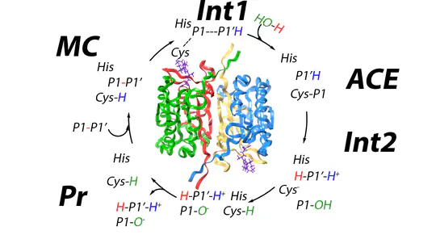
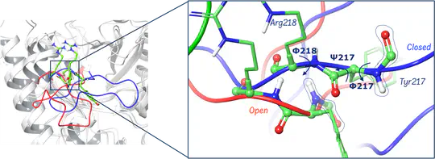
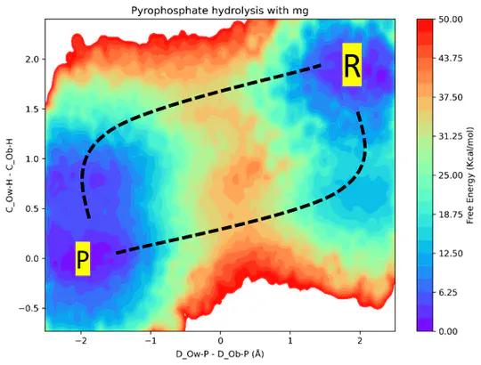
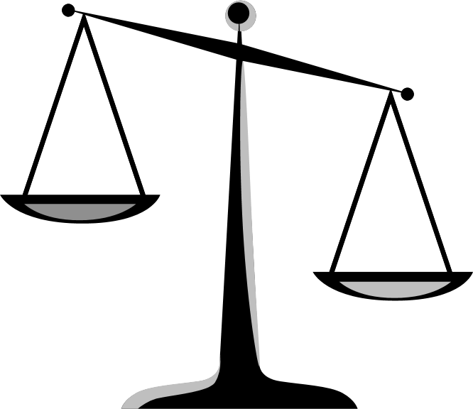
Slow & preciseDFT, MP2, CC
Fast & approximateAM1, PM6, DFTB
01 · ML potentials · Motivation
Tough case: mechanism of Caspase-1
- AM1
- PM3
- PM6
- DFTB3
- GFN2-xTB
- B3LYP-D3/6-31G(d)
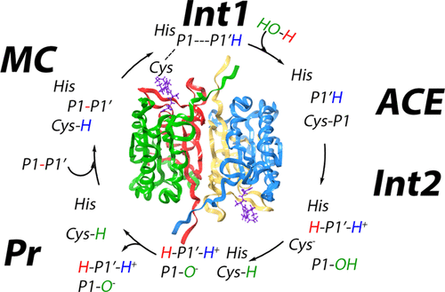
96 replicas × 24 cores × 6 days
≈ 330K CPU hours
(Deacylation only!)
≈ 330K CPU hours
(Deacylation only!)
01 · ML potentials · General idea
Machine learning potentials
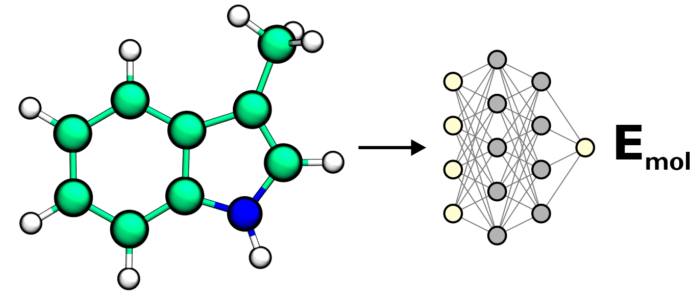
$E_{mol} = f_{w_1,w_2,\ldots}(\boldsymbol{R})$
Fitted parameters (“weights”)
01 · ML potentials · General idea
How to represent a molecular system for ML?
19 atoms
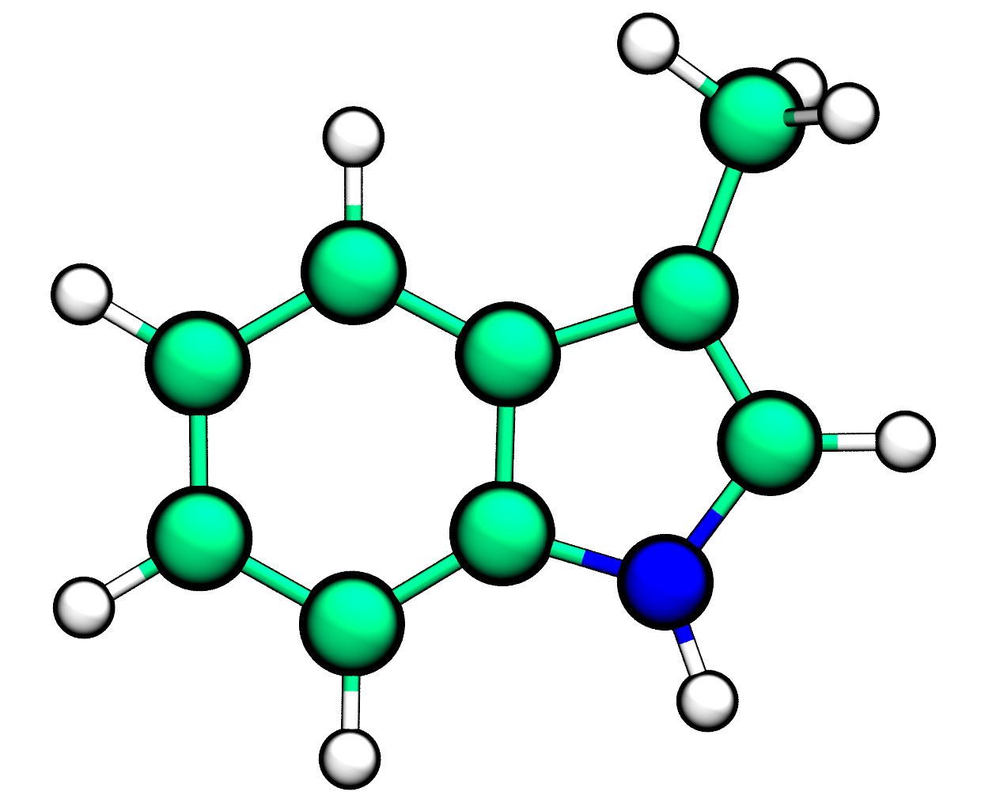
57 Cartesian coordinates
23.66030120 26.99166621 24.30532686 22.86468601 27.38072337 24.94072572 23.80911636 27.65981139 23.45707170 23.51805210 25.49401797 24.06535379 22.36938285 24.91197480 23.64495603 24.49494743 24.46557821 24.25039045 21.45300769 25.45802106 23.47616331 22.67052745 23.58817090 23.32902757 23.97350120 23.26238836 23.73646871 25.74030208 24.40428914 24.77410642 21.92294216 22.92496909 23.18280832 24.51062965 21.99267234 23.98915807 26.36826610 23.15883602 25.12743608 26.13580322 25.33232774 25.15975324 23.96351432 21.08943461 23.76280061 25.74740695 21.91780545 24.70041791 27.33888625 23.20899166 25.59837285 26.15931415 20.93423975 24.87168256 24.56937885 27.09404792 24.89794580
01 · ML potentials · General idea
How to represent a molecular system for ML?
Models based on Cartesian coordinates don’t respect physical symmetries
Translation
Rotation
Permutation
$E$
$=$
$E$
$=$
$E$
$=$
$E$
$\boldsymbol{R}$
$=$$\neq$
$\boldsymbol{R}$
$=$$\neq$
$\boldsymbol{R}$
$=$$\neq$
$\boldsymbol{R}$
01 · ML potentials · General idea
How to represent a molecular system for ML?
Models based on Cartesian coordinates are not transferable
$E = f(\boldsymbol{R})$
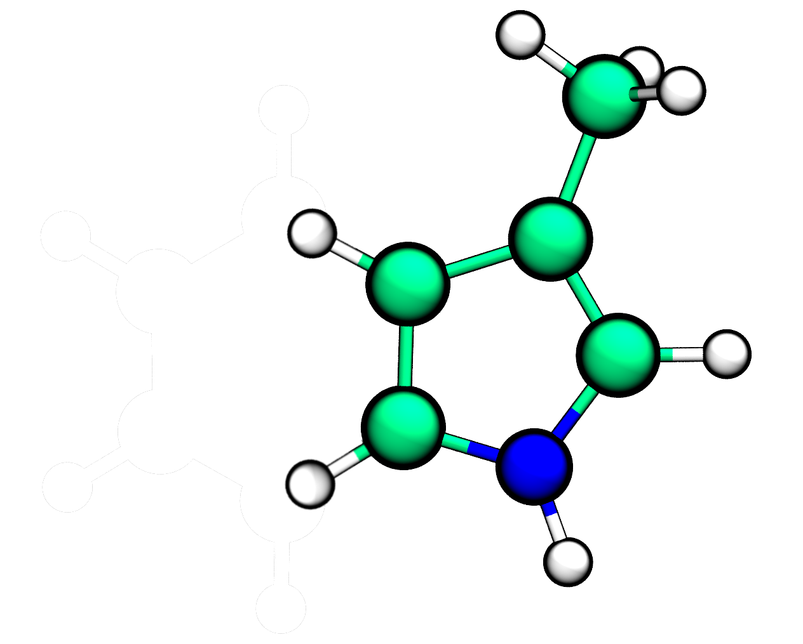
$E = \,???$
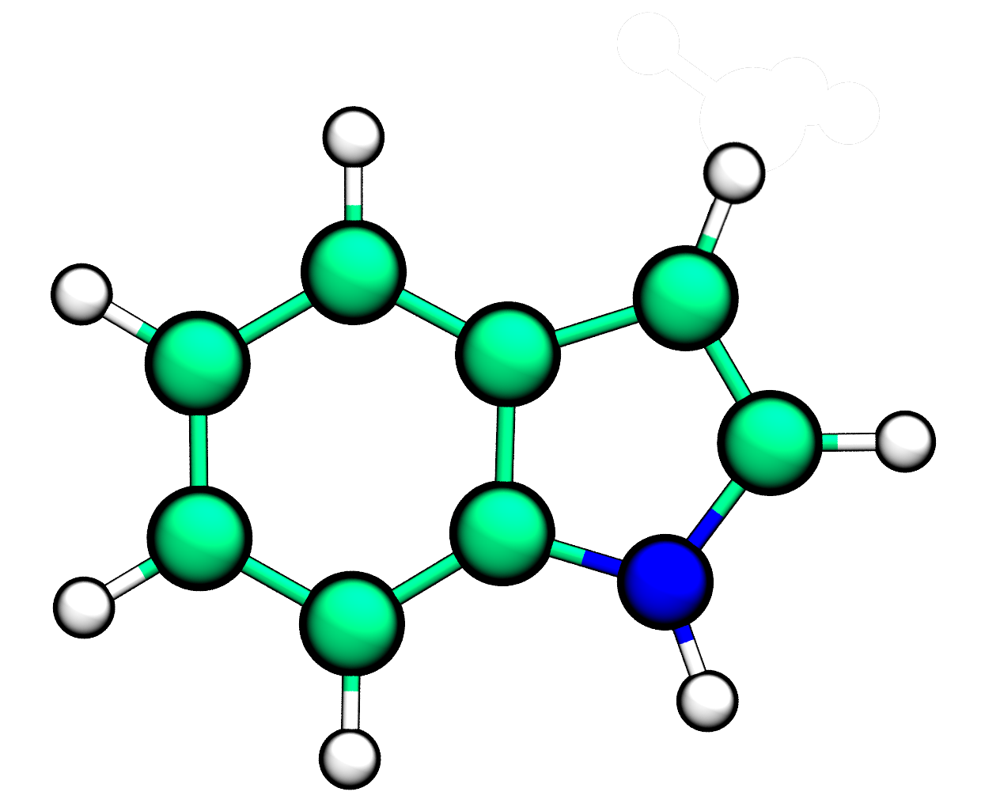
$E = \,???$
01 · ML potentials · General idea
Atom-centered symmetry functions
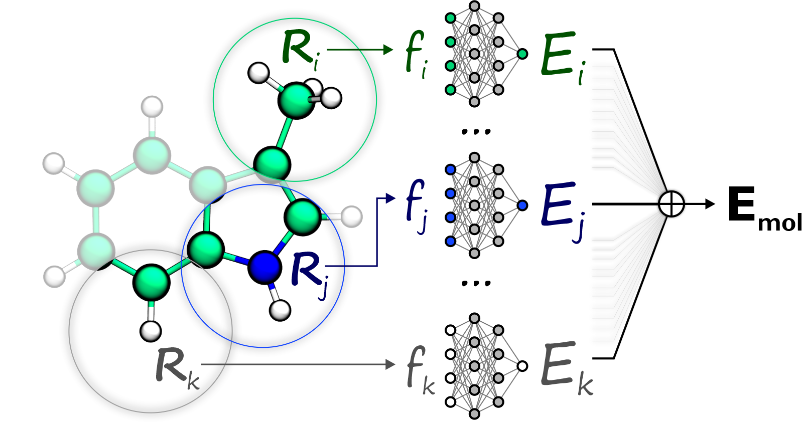
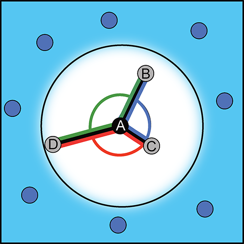
Atomic environment
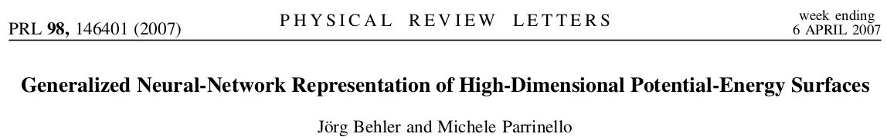
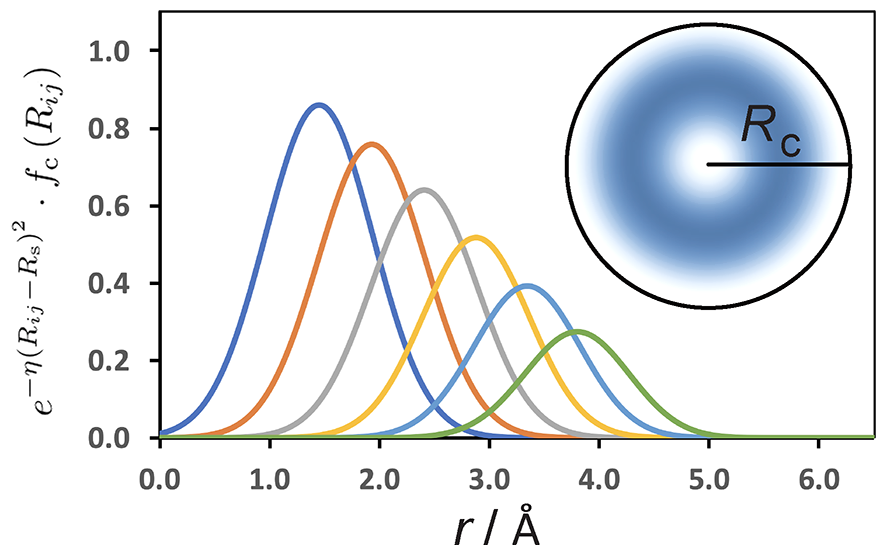
Radial channels
$$G^{\mathrm{rad}}_{i,\mu}=\sum_{j\neq i}^{N_{\mathrm{atom}}\in R_\mathrm{c}} f^{\mathrm{rad}}_{\mu}(R_{ij})\,f_\mathrm{c}(R_{ij})$$
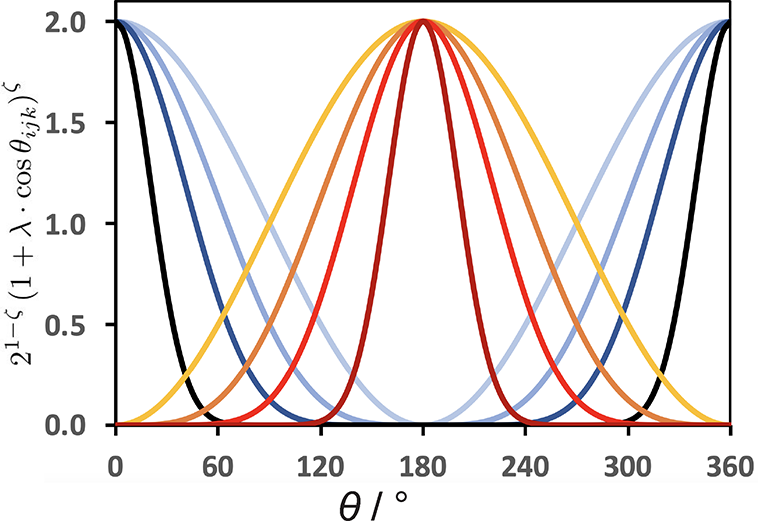
Angular channels
$$\begin{aligned}G^{\mathrm{ang}}_{i,\mu}&=\sum_{i,j,k} f^{\mathrm{ang}}_{\mu}(R_{ij},R_{jk},R_{ik})\cdot\\&\quad f_\mathrm{c}(R_{ij})\,f_\mathrm{c}(R_{ik})\end{aligned}$$
Behler and Parrinello, Phys. Rev. Lett., 2007, 98, 146401; Jörg Behler, Chem. Rev., 2021, 121 (16), 10037–10072
01 · ML potentials · Examples
Example: ANI models
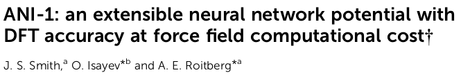
(Supports H, C, N, O)
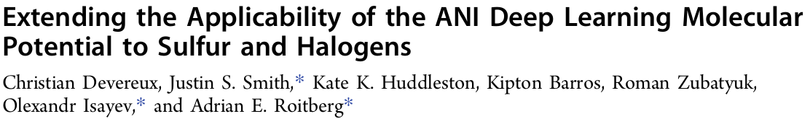
(Supports H, C, N, O, S, F, Cl)
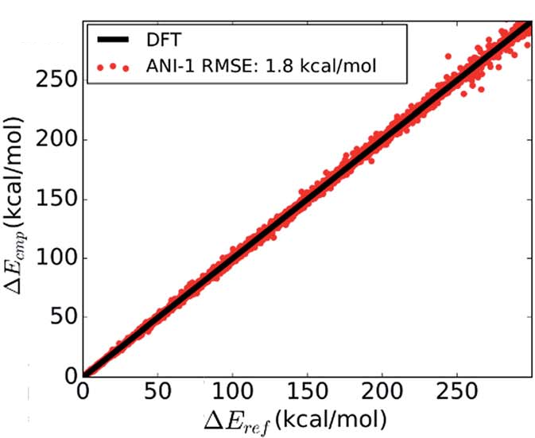
Smith et al., Chem. Sci., 2017, 8, 3192; Devereux et al., J. Chem. Theory Comput., 2020, 16, 4192−4202
01 · ML potentials · Examples
Example: ANI models
Hessian components (automatic differentiation)
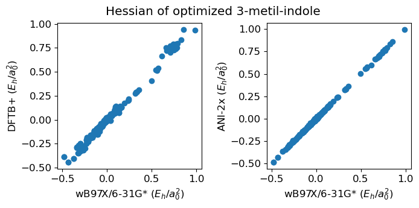
Gao et al., J. Chem. Inf. Model., 2020, 60, 7, 3408-3415
01 · ML potentials · General idea
Are symmetry functions perfect?
Fixed representations
Functions of distances (no directional information)
$$G^{rad}_{i,\mu}=\sum_{j\neq i}^{N_{atom}\in R_c} f^{rad}_\mu(R_{ij})\,f_c(R_{ij})$$
$$G^{ang}_{i,\mu}=\sum_{i,j,k} f^{ang}_\mu(R_{ij},R_{jk},R_{ik})\cdot f_c(R_{ij})\,f_c(R_{ik})$$
Jörg Behler, Chem. Rev., 2021, 121 (16), 10037-10072
01 · ML potentials · General idea
Are symmetry functions perfect?
Rotationally invariant model:
$f_1,\ f_2,\ \dots\ f_n$
$\mathbf f$
01 · ML potentials · General idea
Are symmetry functions perfect?
Rotationally equivariant model:
$f_1,\ \boldsymbol{\vec f}_2,\ \dots\ f_n$
$\mathbf f$
${\mathbf f}^{\prime}$
01 · ML potentials · General idea
Learning representation from the structure
Equivariant Message Passing Graph Neural Networks
- First messages contain the interatomic vector and the element
- Messages are passed to all the neighbors within a cutoff
- An NN model gathers the received messages to create a new state of the node (atom)
- The new state is passed to the neighbors again
- When message passing is finished, the result is predicted from the final state by the readout NN
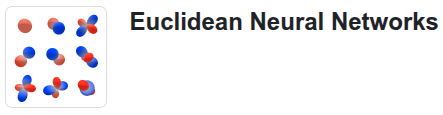
https://github.com/e3nn01 · ML potentials · General idea
Learning representation from the structure
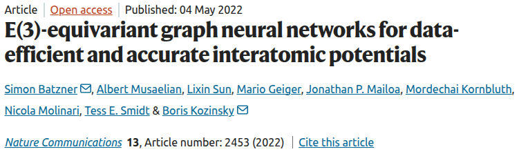
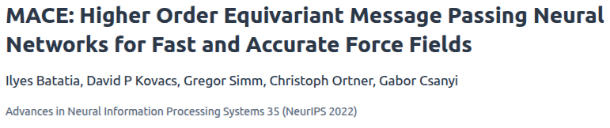
| structures | meV/Å | |
|---|---|---|
| Symmetry functions | 1303 | 120 |
| NequIP | 100 | 123 |
Batzner et al., Nat. Commun., 2022, 13, 1, 2453; Batatia et al., Adv. NIPS, 2022
01 · ML potentials · General idea
What is still missing?
- Atomic energies depend only on the neighbours within a cutoff
- The other molecule is invisible – but Coulomb decays only as $1/r$
01 · ML potentials · General idea
Charges and long-range physics
$\boldsymbol{q}_i$
$f_1,\ f_2,\ \dots\ f_n$
$E=E_\mathrm{local}+E_\mathrm{Coul}$
$E_\mathrm{Coul}=\sum_{i<j}\dfrac{q_iq_j}{r_{ij}}$
all pairs, no cutoff
$E_\mathrm{Coul}=\sum_{i<j}\dfrac{q_iq_j}{r_{ij}}$
all pairs, no cutoff
Examples
3G-HDNNPArtrith, Morawietz, Behler, 2011
TensorMolYao et al., 2018
PhysNetUnke, Meuwly, 2019
AIMNet2Anstine, Zubatyuk, Isayev, 2025
Artrith et al., Phys. Rev. B, 2011, 83, 153101; Yao et al., Chem. Sci., 2018, 9, 2261; Unke, Meuwly, J. Chem. Theory Comput., 2019, 15, 3678; Anstine et al., Chem. Sci., 2025, 16, 10228
02 · ML/MM · Motivation
MLPs vs MM forcefields
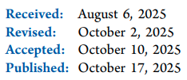
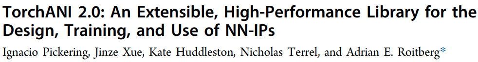
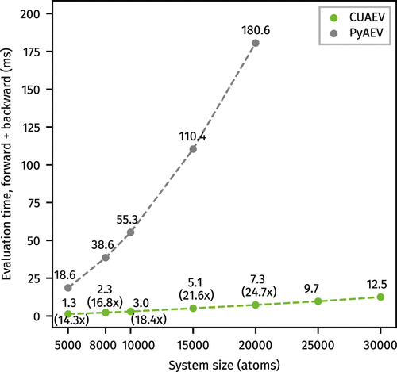
7 ns/day
MM: 1 µs/day
Pickering et al., J. Chem. Inf. Model., 2025, 65 (21), 11656–11671
02 · ML/MM · Motivation
MLPs vs MM forcefields
Issues with MLPs
- MLPs are still at least 2 orders of magnitude slower than MM FFs
- Generic MLPs for condensed phases are not well-tested
- Need to break bonds? Reactive MLPs need to be retrained (risk of artifacts in non-reactive parts)
Solution: ML/MM
- Apply ML only to the reactive region
- Keep MM for the rest (take advantage of well-tested MM FFs)
02 · ML/MM · Motivation
QM/MM
Electrostatic embedding
WF/density solved in the presence of point charges
Point charges interact with the polarized QM part
Any QM can do that!
$E = E_{QM}(\boldsymbol{R}_{QM},\boldsymbol{R}_{MM}) + E_{QM/MM}(\boldsymbol{R}_{QM},\boldsymbol{R}_{MM}) + E_{MM}(\boldsymbol{R}_{QM},\boldsymbol{R}_{MM})$
(includes LJ)
02 · ML/MM · Motivation
ML/MM?
$E = E_{QM}(\boldsymbol{R}_{QM},\boldsymbol{R}_{MM}) + E_{QM/MM}(\boldsymbol{R}_{QM},\boldsymbol{R}_{MM}) + E_{MM}(\boldsymbol{R}_{QM},\boldsymbol{R}_{MM})$
(includes LJ)
$E_{ML} = f(\boldsymbol{R}_{QM})$
02 · ML/MM · Types of embedding
Types of ML/MM embedding
- Keep it simple: treat ML–MM interaction at MM level
- More ML: add MM representation to ML input
- More physics: a separate model for the response to the MM environment
Goal: approximate the QM/MM energy
02 · ML/MM · MM embedding
MM embedding
- MM point charges are kept for the ML region
- All the non-covalent interactions between MM and ML are treated at MM level
$E =$
Replaced by a gas-phase MLP
$E_{QM(vac)}(\boldsymbol{R}_{QM})$
$+$
$E^{emb}(\boldsymbol{R}_{QM},\boldsymbol{R}_{MM})$
$\approx \displaystyle\sum_{i\in ML,\,j\in MM} \dfrac{q_i^{ML}\cdot q_j^{MM}}{r_{ij}}$
$+$
$E_{MM}(\boldsymbol{R}_{MM})$
02 · ML/MM · MM embedding
MM embedding
Pros
- Compatible with existing MM MD codes (one extra energy term)
- Very fast
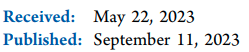
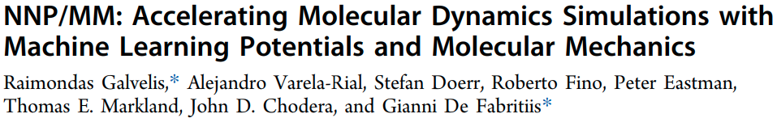
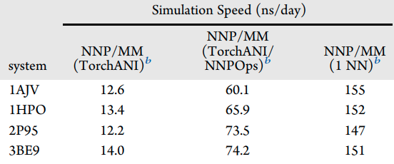
Galvelis et al., J. Chem. Inf. Model., 2023, 63, 18, 5701–5708
02 · ML/MM · MM embedding
MM embedding
Cons
- Only works when MM FF is already OK for non-covalent
- Unsuitable for reactivity
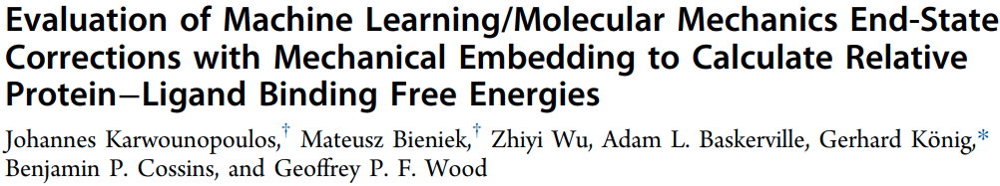
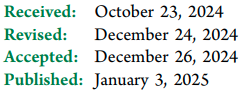
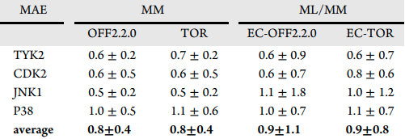
Karwounopoulos et al., J. Chem. Theory Comput., 2025, 21, 22, 11805–11819
02 · ML/MM · MM embedding
Simulation packages for ML/MM with MM embedding

https://software.acellera.com/
Supports ANI and ACEFF ML models
Supports arbitrary Torch-based ML potentials
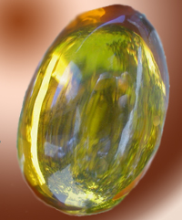
Amber(Sander)
https://ambermd.org/ (Through TorchANI-amber package)
Supports arbitrary Torch-based ML potentials
https://openmm.org/ (Through OpenMM-ML package)
Supports most of the existing MLPs (ANI, MACE, NEquIP, AIMNet etc.)
02 · ML/MM · Integrated embedding
Integrated QM/MM energy model
- Include representation of the MM environment of each atom into the feature vector passed to the model
- Train directly on QM/MM energy
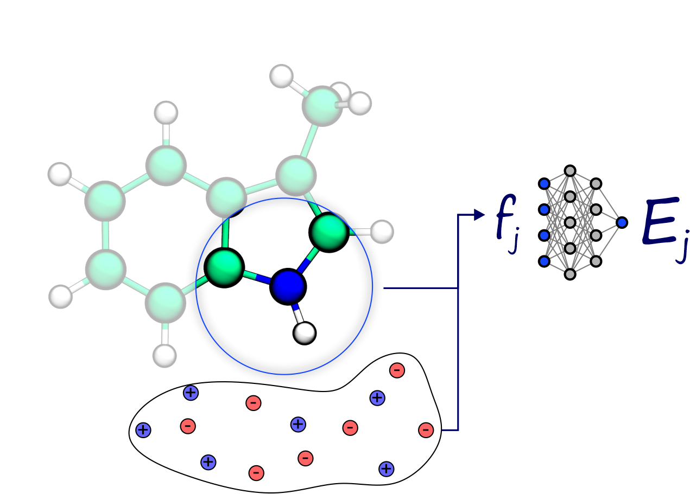
MM point charges
MM representation
$E =$
$E_{QM}(\boldsymbol{R}_{QM},\boldsymbol{R}_{MM}) + E_{QM/MM}(\boldsymbol{R}_{QM},\boldsymbol{R}_{MM})$
$E_{ML} = f(\boldsymbol{R}_{QM},\boldsymbol{R}_{MM})$ Learn both components with a single model
$+\, E_{MM}(\boldsymbol{R}_{QM},\boldsymbol{R}_{MM})$
02 · ML/MM · Integrated embedding
Integrated QM/MM energy model
Pros
- Single model ⇒ Efficient
- Learns the QM/MM energy directly ⇒ Arbitrarily precise
Cons
- MM environments vastly expand configurational space ⇒ more difficult to learn
- Might not generalize well to completely different MM environments
- Inherits QM/MM flaws
- Implementations are mostly in-house
$G^l(\boldsymbol{R}_{ij})$
Multipole interaction coefficients
1000 ML atoms: ≈ 8.5 ns/day
(0.5 fs step, H200 GPU)
(0.5 fs step, H200 GPU)
https://github.com/
rinikerlab/amp_bms
rinikerlab/amp_bms
Thürlemann et al., J. Am. Chem. Soc., 2026, 148, 28133–28156
02 · ML/MM · Physics-based embedding
Physics-based embedding model
- Use an ML model that predicts gas-phase QM energy
- Predict the difference between QM and QM/MM energy based on physics of the response to external fields
ML system in vacuo
Interaction energy is calculated separately
Replaced by a gas-phase MLP
$E=E_{QM(vac)}(\boldsymbol R_{QM})+E^{emb}(\boldsymbol R_{QM},\boldsymbol R_{MM})+E_{MM}(\boldsymbol R_{MM})$
(includes LJ)
$\displaystyle\sum_{i\in MM}V_{polarized}(\boldsymbol r_i)\cdot q_i+E_{pol}$
02 · ML/MM · Physics-based embedding
Physics-based embedding model
$V_{polarized}(\boldsymbol R_{QM},\boldsymbol R_{MM})$
static component
(gas phase $V_{el}$)
(gas phase $V_{el}$)
induced component
(impact of MM on $V_{el}$)
(impact of MM on $V_{el}$)
$V_{static}(\boldsymbol R_{QM})$
$V_{induced}(\boldsymbol R_{QM},\boldsymbol R_{MM})$
$E_{static}=\displaystyle\sum_{i\in MM}V_{static}(\boldsymbol r_i)\cdot q_i$
$E_{induced}=\displaystyle\sum_{i\in MM}V_{induced}(\boldsymbol r_i)\cdot q_i+E_{pol}$
$=\,\boxed{\dfrac12}\displaystyle\sum_{i\in MM}V_{induced}(\boldsymbol r_i)\cdot q_i$
Linear response
02 · ML/MM · Physics-based embedding
Physics-based embedding model
Pros
- Can be trained on gas-phase data only (electron density, polarizability)
- Very transferable
- Interpretable: each component has clear physical meaning
- Predicts properties beyond energy (e.g. dipole, polarizability)
Cons
- Irreducible error (if models are too simple)
- Slower due to two separate models (gas phase and embedding)
02 · ML/MM · Physics-based embedding
“Electrostatic Machine Learning Embedding” (EMLE) scheme
$V_{polarized}(\boldsymbol R_{QM},\boldsymbol R_{MM})$
static
component
(gas phase $V_{el}$)
component
(gas phase $V_{el}$)
induced component
(impact of MM on $V_{el}$)
(impact of MM on $V_{el}$)
$\rho=\displaystyle\sum_i\rho_i$
MBIS partitioning2:
Each atom – Slater density
Each atom – Slater density
$\vec{\boldsymbol\mu}_i\approx\alpha_i\cdot\vec{\boldsymbol E}_i$
$(\alpha\propto v)$
Thole model3:
Each atom – induced dipole
Each atom – induced dipole
Reference data:
- Gas phase electronic density
- Gas phase molecular dipolar polarizability
No QM/MM calculations needed!
1K. Zinovjev, J. Chem. Theory Comput. 2023, 19, 6, 1888–1897; 2Verstraelen et al., J. Chem. Theory Comput. 2016, 12, 3894−3912; 3B. T. Thole, Chem. Phys., 1981, 59, 341-350
02 · ML/MM · Physics-based embedding
Static component: minimal basis iterative stockholder* (MBIS)
$q_{core}$
$s$
$q_{val}$
MBIS density:
$\rho(\boldsymbol r)=\delta(r)\cdot q_{core}+\dfrac{q_{val}}{s^3\,8\pi}\,e^{-\frac{r}{s}}$
$V(\boldsymbol r)=\dfrac{q_{core}}{r}+\dfrac{q_{val}}{r}\left(1-\left(1+\dfrac{r}{2s}\right)e^{-\frac{r}{s}}\right)$
$\rho_{static}=\displaystyle\sum_i\rho_i$
$V_{static}=\displaystyle\sum_i V_i$
*Verstraelen et al., J. Chem. Theory Comput. 2016, 12, 3894−3912
02 · ML/MM · Physics-based embedding
Induced component: Thole model*
$E(\boldsymbol\mu)=-\displaystyle\sum_i\boldsymbol\mu_i^T\boldsymbol E_i$${}-\displaystyle\sum_{j>i}\boldsymbol\mu_i^T\boldsymbol T_{ij}(a_{Thole})\boldsymbol\mu_j$${}+\tfrac12\displaystyle\sum_i\alpha_i^{-1}|\boldsymbol\mu_i|^2$
Interaction with the field
Interaction between the dipoles
Damping
$E_{polarization}$
$\boldsymbol E_i$
$\boldsymbol\mu_i$
$\alpha_i$
Atomic polarizability:
$\alpha=$
$k_Z$
$V$
$q_c$
$N_{val}=-q_{val}$
$s$
$V=\displaystyle\int_{\mathbb R^3}\rho_{MBIS}|\boldsymbol r-\boldsymbol r_i|^3\,d\boldsymbol r=60N_{val}s^3$
*B. T. Thole, Chem. Phys., 1981, 59, 341-350
02 · ML/MM · Physics-based embedding
Generic EMLE model
Dataset:
- QM7, 7165 molecules, up to 7 heavy atoms (C/N/O/S)1
- 80% training set / 20% test set
Reference data:
B3LYP/cc-pVTZ (ORCA, in vacuo)
- Electronic density
- Molecular polarizability
- Energy
Model:
- Sparse Gaussian Process Regression
- Informative Vector Machine (IVM)
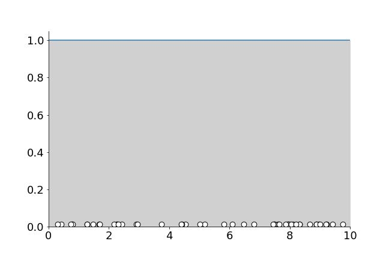
| H | C | N | O | S | Total | |
|---|---|---|---|---|---|---|
| Full QM7 | 61959 | 35761 | 6655 | 5978 | 297 | 110650 |
| IVM (0.05 threshold) | 92 | 155 | 99 | 75 | 24 | 445 |
Total: 897 free parameters
1http://quantum-machine.org/datasets/#qm7
02 · ML/MM · Physics-based embedding
Generic EMLE model
Gaussian Process Regression: 897 free parameters
Conformational FES1
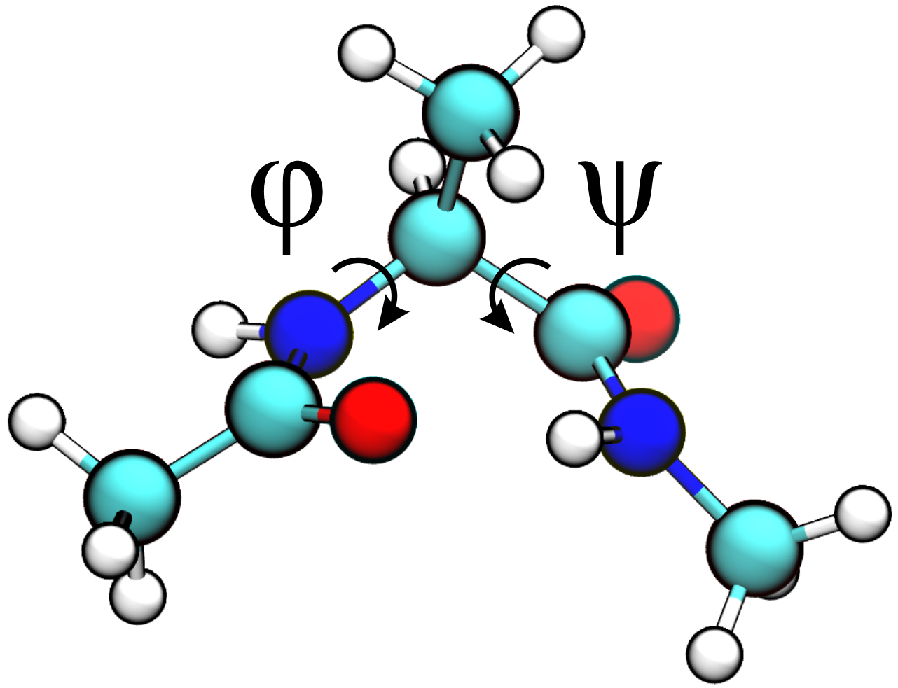
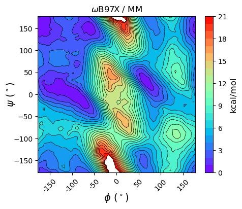
Spectral densities2
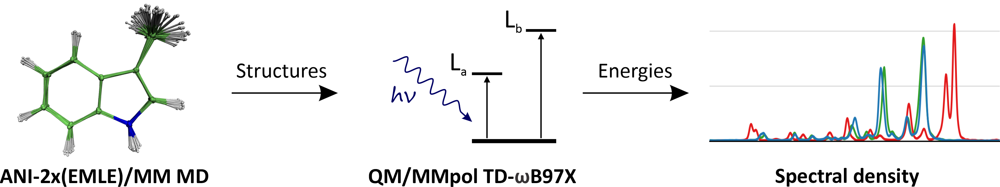
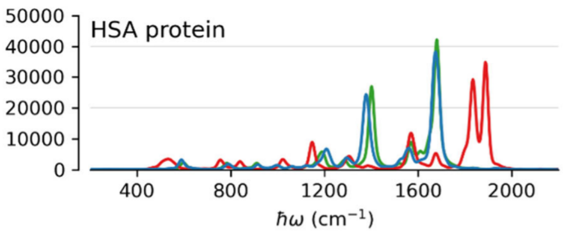
Enzymatic reactions3
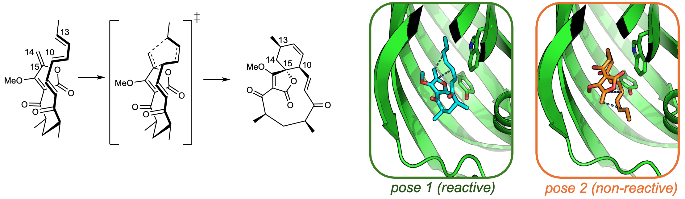
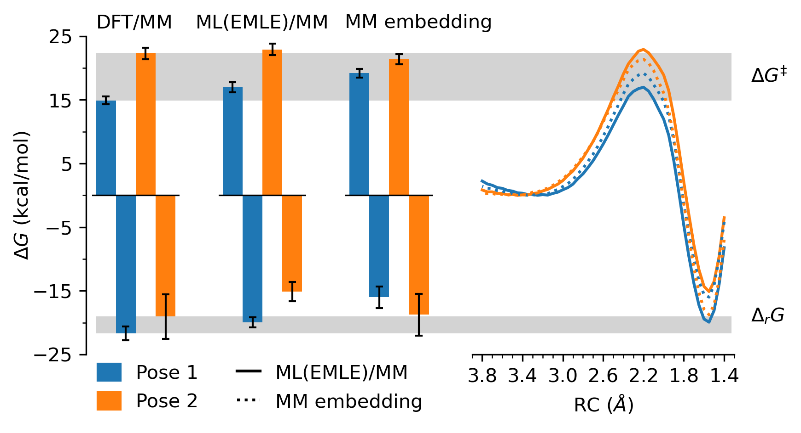
1K. Zinovjev et al., J. Chem. Theory Comput., 2024, 20, 11, 4514-4522; 2K. Zinovjev and C. Curutchet, J. Phys. Chem. Lett., 2025, 16, 3, 774–781; 3V. Gradisteanu et al., Chem. Sci., 2026, 17, 8542–8556
02 · ML/MM · Physics-based embedding
Simpler approach: ANI-MBIS
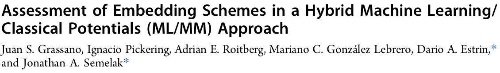
Assume atoms are point MBIS charges:
$$E_{static}=\sum_{i\in ML,\,j\in MM}\frac{q_i^{ML}(\boldsymbol{R}_{ML})\cdot q_j^{MM}}{r_{ij}}$$
Ignore interaction between induced dipoles:
$$\boldsymbol{\mu}_i=\alpha_i\boldsymbol{E}_i$$ $$E_{induced}=\frac12\sum_{i\in ML}\alpha_i|\boldsymbol{E}_i|^2$$
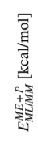
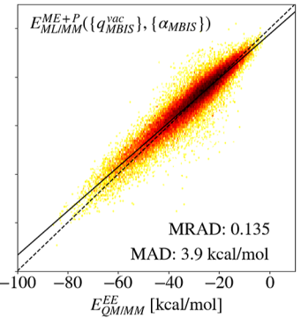
1Grassano et al., J. Chem. Inf. Model., 2024, 64, 10, 4047-4058
02 · ML/MM · Physics-based embedding
Software for electrostatic ML embedding
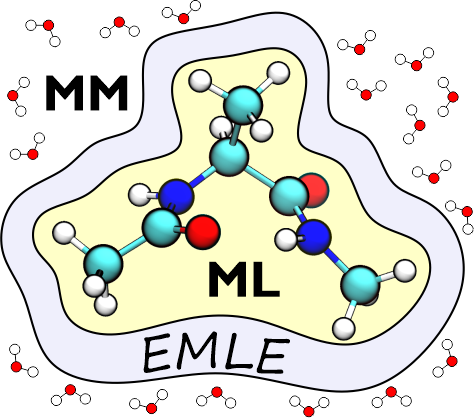
emle-enginehttps://chemle.github.io/emle-engine/
- Interface with sander and OpenMM
- Support for ANI, MACE and DeePMD gas-phase ML models
- Allows for simulations with link atoms both in sander and OpenMM (through sire wrappers: https://sire.openbiosim.org/)
https://openmm.org/ (Through OpenMM-ML package)
Support for EMLE in the next release (hopefully)
02 · ML/MM · Applications
Claisen rearrangement in chorismate mutase with ML(EMLE)/MM
Charged (−2)
Highly polarizable
$\vec{\boldsymbol\mu}_i\approx\alpha_i\cdot\vec{\boldsymbol E}_i$
$\alpha\propto v$???
02 · ML/MM · Applications
Claisen rearrangement in chorismate mutase with ML(EMLE)/MM
EMLE flexible α/v
EMLE fixed α/v
Mechanical embedding
MM embedding
$\alpha=f(\boldsymbol{\mathcal R})\cdot v$
$\alpha=k_Z\cdot v$
Local atomic environment
$q_1$
$q_2$
$q_4$
$q_3$
$q_5$
$q_6$
$q_7$
02 · ML/MM · Applications
Claisen rearrangement in chorismate mutase with ML(EMLE)/MM
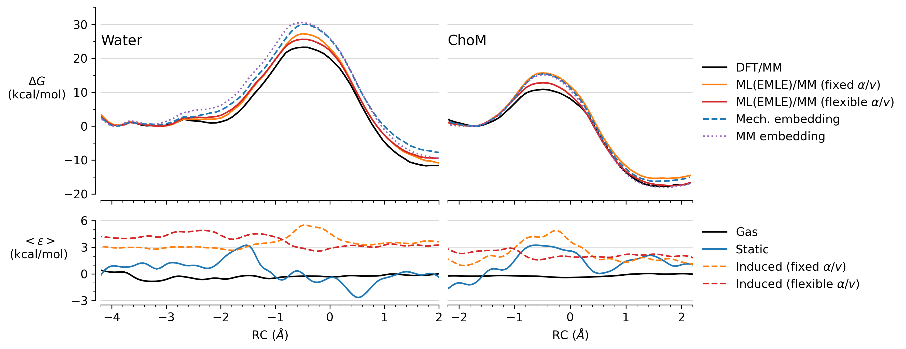
| Water Δ‡G | ChoM Δ‡G | ΔΔ‡G | |
|---|---|---|---|
| DFT/MM | 23.3 ± 1.1 | 10.8 ± 0.2 | −12.5 ± 1.1 |
| ML(EMLE)/MM (flexible α/v) | 25.6 ± 0.8 | 12.8 ± 0.6 | −12.8 ± 1.0 |
| ML(EMLE)/MM (fixed α/v) | 27.3 ± 1.3 | 15.7 ± 0.3 | −11.6 ± 1.3 |
| Mechanical embedding | 30.0 ± 1.0 | 15.4 ± 0.4 | −14.6 ± 1.1 |
| MM embedding | 30.6 ± 1.4 | 15.2 ± 0.4 | −15.4 ± 1.5 |
02 · ML/MM · Applications
Claisen rearrangement in chorismate mutase with ML(EMLE)/MM
Always positive… underpolarized?
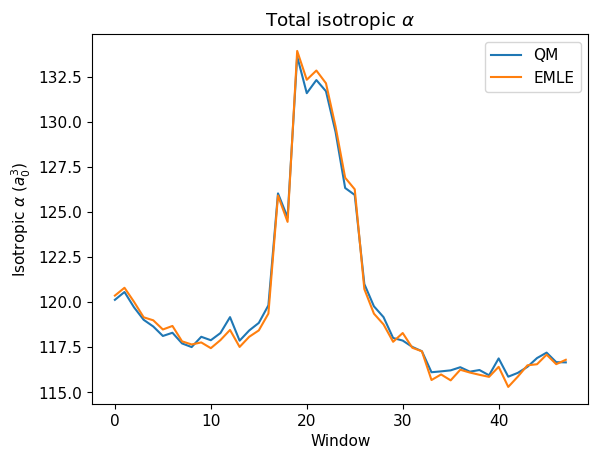
Not really…Maybe DFT/MM overpolarize?
(charge spill-out)
(charge spill-out)
02 · ML/MM · Applications
Claisen rearrangement in chorismate mutase with ML(EMLE)/MM
Radial distribution function (Cho – OH2O)
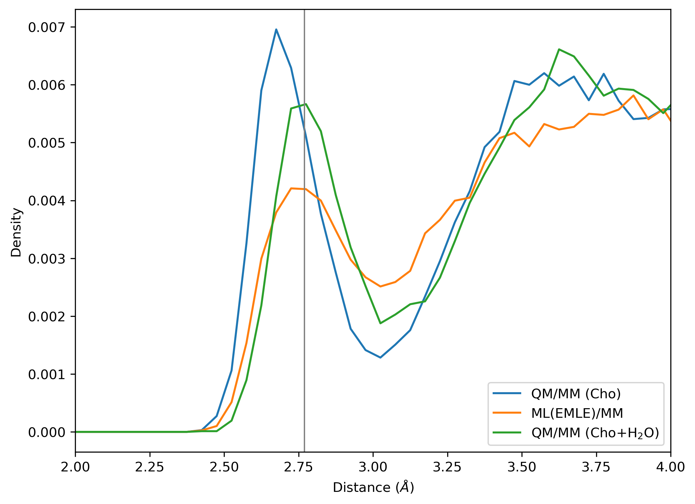
DFT/MM (Cho)
DFT/MM (Cho+H2O)
ML(EMLE)/MM (Cho)
ML/MM model trained on gas phase data reduces a QM/MM artifact!
03 · Recap
Putting it all together…
03 · Recap
Future directions for ML/MM
Holy grail: a model that is fast, accurate and transferable
Speed:
- MM embedding – limited by MLP
- Physical and direct embedding – better integration with the MM engine (GPU-CPU traffic, neighbor lists etc.)
- Physical embedding – use same ML architecture for both gas-phase and embedding properties
Accuracy (beyond QM/MM):
- Better (ML) models for short-range and dispersion
- Mutual polarizability of ML and MM regions (ML/MMpol)
Transferability:
- Support for more chemical elements and charged systems
- Combine physical and direct embedding (move physics to MLP)
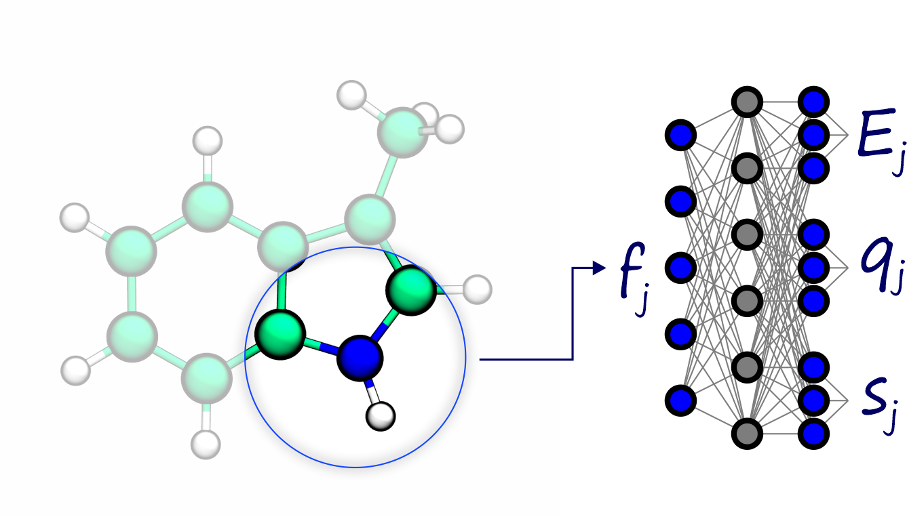
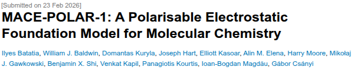
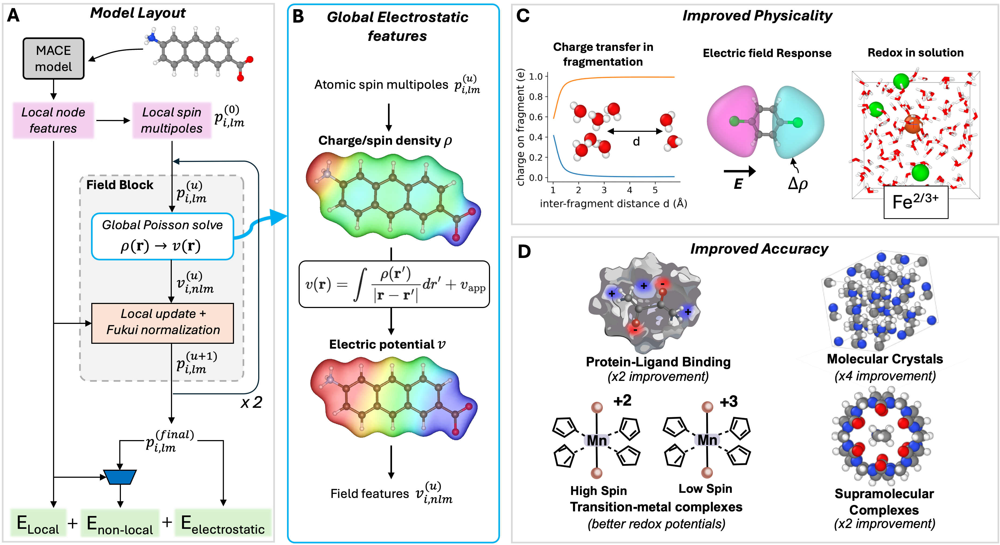
*Batatia et al., arXiv:2602.19411
03 · Recap
Take home messages
MM embedding (fixed ML atomic charges):
- Very fast
- Great to avoid reparameterization of MM (drug binding, screening of large libraries)
- Available in multiple MD codes
- Accuracy comparable to tweaked MM
- Not suitable for reactivity
Integrated ML/MM embedding (directly predict QM/MM energy):
- Fast and accurate
- Requires large datasets for training
- May have low transferability to different MM environments
- Inherits QM/MM issues
- Software still limited
Electrostatic ML embedding (physical response models):
- More expensive
- Less accurate than integrated approach
- Small datasets enough for training
- Very transferable
- Available in sander and OpenMM through emle-engine package
03 · Recap
Further reading
Grassano et al.
From QM/MM to ML/MM: A new era in multiscale modeling
Chem. Phys. Rev., 2025, 6, 041304, https://doi.org/10.1063/5.0260078
Kuhn et al.
Leveraging the Potential of Machine-Learning Interatomic Potentials for QM/MM Simulations
CHIMIA, 2026, 80, 298−304, https://doi.org/10.2533/chimia.2026.298
Wang et al.
On the design space between molecular mechanics and machine learning force fields
Appl. Phys. Rev., 2025, 12, 021304, https://doi.org/10.1063/5.0237876